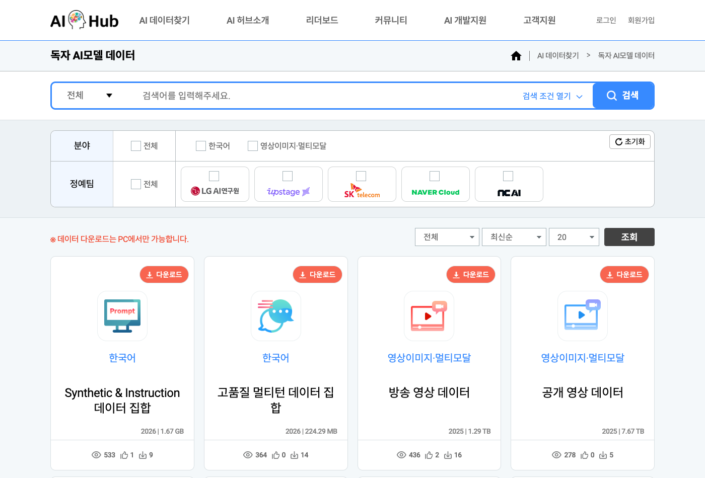
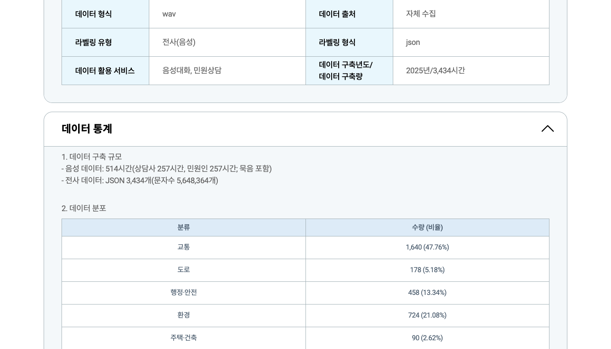

Executive Summary
2026년 8월 27일 과학기술정보통신부와 한국지능정보사회진흥원은 「독자 AI 파운데이션 모델」 프로젝트 다섯 정예팀이 국비로 만든 학습데이터 29종을 AI허브에 열었다. 대한민국 국민이라면 누구나 무료로 내려받아 쓸 수 있다고 했다. 그런데 창구에 가 보면 목록에 놓여 있는 것은 22건이다. 그래서 발표 기록과 창구 기록을 항목마다 나란히 놓고 맞춰 봤다.
29와 22는 어긋난 숫자가 아니었다. 보도자료 붙임은 데이터셋을 형식별로 쪼개 29행으로 세었고, 창구는 데이터셋 단위로 22건을 등재했다. 다섯 팀 모두 정확히 대응한다. 어긋나는 곳은 다른 데 있었다. 같은 데이터셋의 건수와 용량과 형식을 두 공식 기록이 서로 다르게 적는다. 민원 상담 음성 데이터는 창구의 머리 필드에 「3,434시간」으로 적혀 있는데, 같은 페이지 아래쪽 통계는 음성이 514시간이라고 밝힌다. 3,434는 시간이 아니라 전사 파일의 개수다.
공개 데이터셋은 총량으로 도착하지 않는다. 항목으로 도착하고, 항목마다 조건이 다르다. 용량의 대부분은 영상 두 건에 몰려 있는데 이용자의 손길은 그 반대편의 작은 텍스트로 간다. 안전성 데이터 두 건은 목록에서 버튼부터 다르다. 그리고 스물두 건 어디에도 이용조건이 적혀 있지 않다. 받는 쪽이 매번 자기 손으로 세어 볼 수밖에 없다는 뜻이다.
82.8%
영상 두 건의 용량 비중
전체 11,075.6 GiB 가운데 네이버클라우드 2건. 단일 최대 한 건이 70.9%
29행 → 22건
붙임의 행 수와 창구의 등재 수
형식별로 쪼갠 축의 차이일 뿐, 누락된 데이터셋은 없다
3,434 → 514
민원 음성 데이터의 표기와 실제 시간
머리 필드가 전사 파일 3,434개를 「3,434시간」으로 적었다
0건
이용조건이 표기된 데이터셋
22건 상세 페이지에 라이선스·이용허락 항목이 없다
경쟁에서 진 팀의 데이터도 남는다
「독자 AI 파운데이션 모델」 프로젝트는 국내 다섯 정예팀을 뽑아 국산 대형 모델을 만들게 하고, 단계평가로 팀을 걸러 내는 사업이다. 2026년 8월 27일 과학기술정보통신부와 NIA가 개방을 발표한 데이터는 그 다섯 팀이 1차 단계평가 과정에서 만든 것이다. 발표 시점 기준으로 다섯 팀 가운데 둘은 이미 사업에서 빠진 뒤였다.

서울경제 보도에 따르면 네이버클라우드와 NC AI는 이후 단계평가에서 탈락했고, 그럼에도 정부 예산으로 확보한 데이터의 의무 개방 대상에는 포함됐다. 이 대목은 보도자료 본문이 직접 밝히지 않는다. 다만 확인은 어렵지 않다. 보도자료 붙임의 팀별 목록에도, 창구의 등재 목록에도 두 팀의 데이터가 그대로 올라와 있다. 등재된 22건 가운데 12건이 이 두 팀의 것이고, 개방 용량으로는 83.6%에 해당한다. 경쟁에서 진 쪽의 산출물이 사라지지 않고 창구에 남는 구조다.
남는 이유는 사업 설계에 있다. 보도자료는 개방의 근거를 이렇게 적는다.
"「독자 AI 파운데이션 모델」 사업 공고상 참여조건에 따라 데이터 구축·가공예산을 통해 확보한 데이터 중 50% 이상 개방이 필요한 상황에서, 네이버클라우드, 업스테이지, 에스케이텔레콤, 엔씨에이아이는 품질검증 등을 거친 데이터 전체를 개방하기로 하였다. 엘지AI연구원은 의무개방량(50% 이상)을 준수하여 공개 대상 데이터를 통계적으로 선별·개방하기로 하였다."
잘못 읽히기 쉬운 것은 LG AI연구원 대목이다. 보도가 "규정에 따라 50% 이상을 선별 개방한다"고 쓰면, 규정 때문에 절반만 열었다는 뜻으로 읽히기 쉽다. 그런데 원문의 낱말은 의무개방량이고 50%는 하한이다. 네 팀은 검증을 통과한 분량 전체를 냈고, LG AI연구원은 하한을 지키는 선에서 데이터셋마다 일정 간격으로 표본을 뽑아 냈다. 그 선별 과정은 TTA가 검증했다고 적혀 있다. 실제로 몇 퍼센트를 열었는지는 계산할 수 없다. 붙임에는 「개방량」 열만 있고 구축 총량을 적은 열이 없기 때문이다.
검증을 맡은 것은 NIA와 한국정보통신기술협회다. 두 기관은 1차 단계평가가 끝난 뒤 각 정예팀에서 구축·가공 예산으로 확보한 데이터 전체를 넘겨받았고, 품질검증과 개인정보·유해성 검증을 거쳐 라이선스 제약이 걸린 데이터를 빼는 조치를 진행했다. 즉 창구에 올라온 22건은 팀이 만든 전부가 아니라 세 단계를 통과하고 남은 것이다.
데이터에 붙은 돈은 한 덩어리가 아니었다. 5개 정예팀 최종 선정을 다룬 2025년 8월 보도를 보면, 정부의 데이터 지원은 세 갈래로 나뉘어 있었다. 개방 발표문이 말하는 "2025년 데이터 구축·가공 예산 150억 원"은 이 가운데 팀별 개별수요에 해당하는 것으로 보이고, 나머지 두 갈래는 별도 예산이다.
| 지원 갈래 | 규모 | 성격 |
|---|---|---|
| 데이터 공동구매 | 100억 원 | 정예팀 공통 신청분을 정부가 일괄 구매·가공 |
| 방송영상 학습용 데이터 | 200억 원 | 고품질 방송영상 전용 지원 라인 |
| 팀별 데이터셋 구축·가공 | 팀당 28억 원 | 각 팀이 자체 개발 전략에 맞춰 직접 구축 |
출처: 바이라인네트워크, 「독자 AI 파운데이션 모델 사업 5개 정예팀 정해졌다」(2025-08-04). 공고문에는 개별수요가 연 28~40억 원의 범위로 적혀 있고 확정액은 하한이 채택됐다. 방송영상 200억 원 라인의 집행 주체는 공개된 자료에서 확인되지 않는다. 이 예산 항목과 뒤에 나올 영상 데이터 용량 쏠림을 인과로 이어 읽을 근거는 없다.
국비로 만든 학습데이터의 일정 비율 이상을 공개하라는 정량 조항은 흔치 않다. 공개된 자료에서 확인한 범위로는, 일본의 GENIAC 관련 문서에서 학습데이터 공개 의무 조항을 찾지 못했고 인도의 IndiaAI와 싱가포르의 SEA-LION에도 그런 조항이 없다. 유럽의 OpenEuroLLM은 후보 데이터를 공개 카탈로그로 정리하도록 프로그램 구조에 요구를 둔다. 각국 공모요령 원문까지 열어 보지는 못했으므로 "한국만 유일하다"고 단정할 수는 없다. 다만 눈에 띄는 것은 방향이다. 유럽과 인도는 국가가 데이터를 모아 팀에 주고, 한국은 팀이 만든 데이터를 국민에게 내놓게 한다. 탈락한 팀의 산출물까지 창구에 남는 것은 그 설계의 결과다.
같은 8월 27일, 정부는 고가치 공공데이터 100종의 개방 시점을 앞당기는 결정도 내놓았다. 그 결정을 다룬 앞선 리포트가 정부에서 정예팀으로 가는 흐름을 본 것이라면, 이 글은 정예팀에서 국민으로 돌아오는 흐름을 본다.
29종과 22건은 같은 목록이었다
발표는 29종이라고 했다. 창구를 열어 세면 22건이다. AI허브의 「독자 AI모델 데이터」 메뉴를 2026년 8월 29일에 조회한 결과, 등재된 데이터셋은 일련번호 71890부터 71913까지 22건이었다. 개방 이틀째의 목록이다. 일곱은 어디로 갔을까.

답은 첨부파일에 있었다. 과기정통부 보도자료의 붙임1 「정예팀별 데이터 구축·활용 현황 및 개방(안)」은 정예팀명 · 데이터셋명 · 형식 · 개방량 · 용량 다섯 열로 된 표다. 행을 세면 정확히 29개이고, 그 안에 적힌 데이터셋 이름 중 서로 다른 것을 세면 정확히 22개다. 즉 정부가 말한 「종」은 데이터셋을 영상·텍스트·음성·이미지 같은 형식으로 쪼갠 행의 수이고, 창구의 「건」은 데이터셋 자체의 수다.
그 대응은 총계에서만 맞는 것이 아니라 팀별로도 하나하나 맞는다. 오른쪽 두 열만 보면 된다. 붙임의 고유 데이터셋 수와 창구 등재 수가 다섯 팀 모두에서 같다.
| 정예팀 | 붙임1 행 수 | 고유 데이터셋명 | AI허브 등재 |
|---|---|---|---|
| 네이버클라우드 | 6 | 2 | 2 |
| 업스테이지 | 5 | 5 | 5 |
| SK텔레콤 | 6 | 4 | 4 |
| NC AI | 10 | 10 | 10 |
| LG AI연구원 | 2 | 1 | 1 |
| 합계 | 29 | 22 | 22 |
차이 일곱은 다섯 데이터셋에서 나온다. 네이버클라우드의 공개 영상과 방송 영상은 각각 영상·텍스트·음성 세 행으로 갈라지고, SK텔레콤의 두 LMM 데이터셋과 LG AI연구원의 Scene Understanding 데이터셋은 각각 두 행으로 갈라진다. 이 다섯이 차지하는 행이 열둘이고, 나머지 열일곱 데이터셋은 한 행씩이다. 열둘이 다섯으로 접히면서 일곱이 줄어든다.
▲ 붙임1의 29행과 AI허브 22건의 관계 | 자료: 과기정통부 보도자료 붙임1, AI허브 「독자 AI모델 데이터」 목록(2026-08-29 조회)
붙임을 열면 보도 본문의 수치도 그 자리에서 재현된다. 네이버클라우드의 "텍스트 1,550만 건"은 두 영상 데이터셋의 텍스트 행을 더한 값이다. 900만에 650만을 더하면 정확히 맞는다. "음성 질의응답 1,200만 건"도 같은 방식으로 두 행의 합이고, 업스테이지의 "50만 건의 사후 학습 데이터"는 네 행을 더해 502,084건이다. 발표 수치가 부실한 게 아니었다.
남는 것은 한 건의 차이다. 표에 인쇄된 총계는 35,444,173건인데, 29행의 개방량을 손으로 더하면 35,444,172건이 나온다. 보도자료 원본 파일을 열면 그 총계 칸이 개방량 열 스물아홉 칸을 더하는 계산식으로 되어 있다. 그런데 그 열에는 건수가 아닌 칸이 하나 섞여 있다. 업스테이지 사전학습 데이터의 개방량이 「1조 토큰」이라고 적혀 있다. 계산식이 그 칸에서 숫자로 집어낸 것이 앞의 1뿐이라고 보면, 나머지 스물여덟 칸의 합에 1이 붙어 인쇄된 총계와 정확히 맞는다. 토큰을 세는 칸 하나가 건수 총계에 1건으로 들어가 있는 셈이다.
같은 칸에는 그 계산식이 마지막으로 내놓았던 값도 함께 남아 있다. 35,531,561이다. 인쇄된 값과 87,388건이 벌어진다. 표가 지금 모습으로 정리된 뒤 계산이 다시 돌지 않았거나, 계산된 값 자리에 다른 값이 들어왔다는 뜻이다. 어느 쪽인지는 파일만으로 가릴 수 없다. 한 칸 옆의 용량 총계 「11.3TB」에는 아예 계산식이 없다. 그 값은 손으로 적혀 있다.
29 대 22의 의혹은 이로써 닫힌다. 붙임의 숫자들은 자기 문서 안에서 이만큼 잘 맞는다. 같은 숫자를 창구의 데이터셋 페이지에 대 보면 사정이 달라진다.
같은 데이터를 두 기록이 다르게 적는다
붙임의 각 행에는 데이터셋 이름과 개방량이 적혀 있다. 창구의 각 상세 페이지에도 같은 데이터셋의 구축량이 적혀 있다. 두 숫자를 스물두 번 나란히 놓아 보면, 잘 맞는 항목과 전혀 맞지 않는 항목이 갈린다. 그리고 맞지 않는 방식이 항목마다 다르다.
3.1규칙은 있다. 어디에도 적혀 있지 않을 뿐이다
먼저 잘 맞는 쪽부터. NC AI의 「생각과정 씨앗 학습 데이터」는 붙임에 55,976건으로 적혀 있고, 창구 상세에는 원천데이터 35,976건과 라벨링데이터 20,000건으로 나뉘어 적혀 있다. 두 값을 더하면 붙임의 숫자가 나온다. 같은 방식이 대화생성형·행동생성형·의료 AI·다국어 사전학습 데이터에서도 그대로 성립한다. 다섯 항목에서 오차 없이 맞으니 우연으로 보기 어렵다. 붙임의 「개방량」은 원천과 라벨링을, 있으면 메타데이터까지 더한 값이다.
문제는 그 합산 규칙이 보도자료에도, 붙임의 표 머리에도, 창구의 어느 페이지에도 적혀 있지 않다는 것이다. 이용자가 두 문서를 잇는 방법을 스스로 알아내야 한다. 다섯 건을 맞춰 본 뒤에야 규칙이 보이고, 규칙이 보이자마자 그 규칙이 통하지 않는 항목이 나온다.
3.2영상 두 건은 규칙 밖에 있다
네이버클라우드의 영상 데이터 두 건에서 합산 규칙은 성립하지 않는다. 붙임은 공개 영상을 234만 건, 방송 영상을 52만 건으로 적는다. 창구 상세의 원천데이터는 각각 2,790,505건과 530,430건이다. 방송 영상은 원천 총계에 가깝고, 공개 영상은 원천 총계보다 한참 작고 오히려 세그먼트 클립 수 2,392,396건에 가깝다. 같은 팀이 같은 형식으로 만든 두 데이터셋인데 붙임의 숫자가 창구의 서로 다른 열에 붙는다. 한 기준으로는 설명되지 않는다.
단위 자체도 문제다. 창구 상세는 자기가 원천데이터라고 부르는 숫자를 두고 "원천데이터(세그먼트 및 컨텍스트 클립)"라고 스스로 밝힌다. 장면 전환을 기준으로 잘라 낸 영상 조각의 개수라는 뜻이다. 반면 보도 문장의 "공개 영상 234만 건"은 영상 편수를 세는 것처럼 읽힌다. 어느 쪽이 맞는지 공개된 자료로는 알 수 없다. 두 숫자를 같은 단위로 놓을 수 없다는 것만 분명하다.
어긋남은 영상 행에만 있지 않다. 같은 두 데이터셋의 음성 행을 보자. 붙임은 공개 영상 쪽을 642만 건, 방송 영상 쪽을 558만 건으로 적는다. 창구의 같은 두 항목은 한국어 음성 질의응답을 각각 6,240,886건과 5,761,229건으로 센다. 두 기록의 합계는 1,200만과 1,200만 2,115로 사실상 같다. 그런데 그 총량이 두 데이터셋에 나뉘는 방식은 서로 다르다. 한쪽에서 늘어난 만큼 다른 쪽에서 줄어들어 총계만 맞는 모양이다. 보도가 인용한 "음성 질의응답 1,200만 건"이 정확한 것과, 그 1,200만을 어느 데이터셋에서 얼마씩 받아 갈 수 있는지는 별개의 질문이다. 앞의 질문에는 두 기록이 같은 답을 내놓고 뒤의 질문에는 다른 답을 내놓는다.
3.3형식 라벨이 실물과 어긋난다
22건을 29종으로 늘릴 때 쓴 축은 형식이다. 그 축이 적어도 한 행에서 실물과 맞지 않는다. NC AI의 「AI Safety Alignment 데이터」를 붙임은 이미지 10,000건 11MB로 적었다. 같은 데이터의 창구 상세를 열면 메타데이터 구조표의 「데이터 유형」이 텍스트이고, 구축 수량은 캐릭터수 2,540,064자와 어절수 93,088로 집계되며, 파일용량은 21.12MB다. 10,000건에 11MB면 한 건이 1.1KB인데, 이미지 파일의 크기로 보기는 어렵다. 형식을 나누는 기준이 흔들리면 29라는 수 자체가 흔들린다.
3.4한 페이지가 자기 안에서 어긋나기도 한다
가장 확인하기 쉬운 사례는 NC AI의 「민원분야 대화 음성 데이터」다. 상세 페이지 위쪽 「데이터 구축량」 필드에는 2025년/3,434시간이라고 적혀 있다. 조금 내려가면 같은 페이지의 「데이터 구축 규모」가 이렇게 적는다. 음성 데이터는 514시간이고, 상담사와 민원인이 각각 257시간이며, 전사 데이터는 JSON 3,434개다. 3,434는 시간이 아니라 파일의 개수였다. 붙임도 이 항목을 6,868건으로 세는데, 이는 3,434의 두 배이니 원천과 라벨링을 더한 값이다. 머리 필드만 보고 데이터 규모를 가늠한 사람은 실제 음성 길이를 여섯 배 넘게 크게 잡게 된다.

NC AI의 「Synthetic & Instruction 데이터 집합」에서는 같은 페이지가 어절 수를 두 번 다르게 적는다. 머리 필드는 721,651,839어절, 바로 아래 표는 106,141,506어절이다. 글자 수는 양쪽 모두 45억 4,275만여 자로 같은데 어절 수만 갈린다. 그리고 뒤쪽 숫자는 옆에 놓인 「고품질 멀티턴 데이터 집합」의 어절 수와 자릿수까지 똑같다. 왜 이렇게 됐는지 단정할 근거는 없다. 다만 이용자 입장에서 둘 중 어느 쪽을 믿어야 할지 알 방법도 없다.
세 번째 사례는 덧셈이 맞지 않는 경우다. NC AI의 「의료 AI 학습 데이터」 상세 표는 원천데이터의 총 용량을 29.44GB로 적어 놓고, 바로 아래에서 원천데이터 가운데 멀티미디어 한 줄만 36.87GB라고 적는다. 부분이 전체보다 크다. 같은 표의 맨 아래 합계는 약 37.1GB인데, 이 값은 「총 용량」 줄을 빼고 나머지 줄을 모두 더한 결과에 맞는다. 건수 쪽은 각 줄을 더하면 합계 307,842건이 정확히 나온다. 즉 이 표에서 틀어진 것은 용량 한 칸이고, 그 칸이 하필 「총 용량」이라는 이름을 달고 있다.
지금까지의 대조를 한자리에 모았다. 위 세 줄은 규칙이 맞는 쪽이고, 아래 다섯 줄이 어긋나는 쪽이다.
| 데이터셋 | 보도자료 붙임1 | AI허브 상세 | 읽히는 방식 |
|---|---|---|---|
| 생각과정 씨앗 71904 |
55,976건 | 원천 35,976 + 라벨링 20,000 | 합산 규칙이 정확히 맞는다 |
| 다국어 사전학습 71905 |
2,504,351건 | 파일 2,504,351개 | 그대로 일치 |
| 의료 AI 71909 |
307,842건 / 28.6GB | 합계 307,842건 / 약 37.1GB | 건수는 맞고 용량은 갈린다 |
| 공개 영상 71912 |
2,340,000건 | 원천 2,790,505 (세그먼트 2,392,396) | 어느 열과도 맞지 않는다 |
| 방송 영상 71913 |
520,000건 | 원천 530,430 (세그먼트 381,437) | 공개 영상과 다른 열에 가깝다 |
| 민원분야 대화 음성 71910 |
6,868건 | 머리 필드 「3,434시간」 / 음성 514시간, JSON 3,434개 | 파일 수가 시간으로 적혔다 |
| AI Safety Alignment 71907 |
이미지 10,000건 / 11MB | 텍스트 10,000건 / 21.12MB | 형식과 용량이 함께 어긋난다 |
| Synthetic & Instruction 71903 |
858,960건 / 1.7GB | 원천데이터 24건 / 약 5.81GB | 세는 단위가 아예 다르다 |
자료: 과기정통부 보도자료 붙임1, AI허브 각 데이터셋 상세 페이지(2026-08-29 조회). 71903은 목록의 파일 용량 실측이 1.67 GiB로 붙임 쪽에 가깝고 상세 페이지의 5.81GB와는 세 배 넘게 벌어진다. 옆 데이터셋 71902도 같은 모양이다. 붙임의 226MB와 목록 실측 0.22 GiB는 맞는데 상세 페이지만 820MB라고 적는다. LG AI연구원의 71899도 두 기록이 조금씩 어긋난다. 붙임은 이미지 151,952건과 텍스트 1,302건으로 적고, 상세 페이지는 어노테이션 152,014장에 JSON 1,262개라고 적는다. 둘 중 어느 값이 맞는지는 공개된 자료에 나와 있지 않다.
3.5단위 표기 하나가 없어서 방향조차 정해지지 않는다
발표는 개방 규모를 11.3TB라고 했다. 붙임 29행의 용량을 직접 더해 보면 이 숫자의 정체가 드러난다. GB를 1024의 세제곱으로 읽으면 합계가 11.282이고, 1000의 세제곱으로 읽으면 11.345다. 어느 쪽으로 읽어도 11.3에 맞는다. 즉 11.3TB는 별도로 잰 값이 아니라 붙임의 행을 더한 값이다.
그런데 창구에서 22건의 파일 크기를 바이트 단위로 받아 더하면 11,075.6 GiB가 나온다. 이 값을 11.3TB와 비교하려면 11.3이 TB인지 TiB인지 알아야 하는데, 보도자료에도 붙임에도 상세 페이지에도 그 표기가 없다. 이진으로 읽으면 실측이 발표보다 4.1% 작고, 십진으로 읽으면 4.8% 크다. 실측이 발표보다 큰지 작은지, 그 방향조차 정해지지 않는다.
이 모호함은 보도자료만의 것이 아니다. AI허브 페이지가 파일 크기를 화면에 그릴 때 쓰는 함수 자체가 두 관행을 섞어 쓴다.
function getfileSize(x) {
var s = ['bytes', 'KB', 'MB', 'GB', 'TB', 'PB'];
var e = Math.floor(Math.log(x) / Math.log(1024));
return x != 0 ? (x / Math.pow(1024, e)).toFixed(2) + " " + s[e] : 0;
};
▲ AI허브 데이터셋 페이지에 들어 있는 파일 크기 표시 함수 | 1024로 나누면서 라벨은 십진 접두어인 KB·MB·GB·TB를 붙인다. 널리 쓰이는 관행이지만, 화면의 「GB」는 실은 GiB다.
정부 기록은 자기 안에서 일관적이고, 창구 기록도 대체로 자기 안에서 일관적이다. 그런데 두 기록을 이으려는 순간 건수와 용량과 형식이 조금씩 다른 얼굴을 한다. 학습 데이터를 총량으로 소개받은 사람과 항목으로 받아 가야 하는 사람 사이의 거리가, 이 표 안에 그대로 들어 있다.
11TB의 83%는 영상 두 건이다
총량은 "11.3TB"라는 한 줄로 온다. 그 안을 열어 보면 대단히 고르지 않다. 창구에서 22건의 파일 크기를 그대로 받아 팀별로 더하면, 네이버클라우드 두 건이 전체 용량의 82.8%를 차지한다. 그중 공개 영상 데이터 한 건만으로 70.9%다. 나머지 스무 건이 나눠 갖는 몫은 5분의 1이 채 안 된다.
그런데 사람들의 손길은 반대편으로 간다. 개방 이틀째인 2026년 8월 29일에 조회한 값을 보면, 다운로드 223회 가운데 네이버클라우드 두 건이 가져간 것은 20회다. 반대로 전체 용량의 1%도 안 되는 NC AI 열 건이 조회수의 44.5%를 가져간다. 표본이 작고 관찰 시점도 이틀뿐이니 원인을 말할 수는 없다. 다만 총량이 큰 쪽과 사람이 몰리는 쪽이 반대라는 모양은 분명하다.
| 정예팀 | 등재 | 용량(GiB) | 용량 비중 | 다운로드 | 조회수 |
|---|---|---|---|---|---|
| 네이버클라우드 | 2 | 9,174.8 | 82.8% | 20 | 710 |
| 업스테이지 | 5 | 1,644.5 | 14.8% | 84 | 1,668 |
| SK텔레콤 | 4 | 134.1 | 1.2% | 40 | 1,359 |
| NC AI | 10 | 83.8 | 0.8% | 70 | 3,263 |
| LG AI연구원 | 1 | 38.4 | 0.3% | 9 | 327 |
| 합계 | 22 | 11,075.6 | 100% | 223 | 7,327 |
자료: AI허브 「독자 AI모델 데이터」 목록 2026-08-29 조회(개방 이틀째). 다운로드와 조회수는 시간이 지나면 달라진다.
같은 값을 용량 비중과 다운로드 비중으로 나란히 놓으면 두 막대가 서로 반대로 눕는다.
▲ 팀별 용량 비중과 다운로드 비중 | 자료: AI허브 목록 2026-08-29 조회(n=22, 개방 D+2). 경향을 보여 주는 관찰이며 인과 해석의 근거는 아니다.
이 창구에서 두 자릿수 다운로드는 결코 흔한 숫자가 아니다. 이번 22건 바로 아래 구간에 등록돼 있는 데이터셋 네 건을 열어 보면, 2025년 6월에 최종 개방된 뒤 열네 달이 지난 지금도 다운로드가 한두 회에서 마흔 회 남짓에 머문다. 무작위 표본이 아니라 목록에서 인접한 항목을 고른 것이라 대표성을 주장할 수는 없다. 그래도 이틀 만에 세 자릿수를 기록한 이번 개방이 이 창구 기준으로 눈에 띄는 반응이라는 것은 말할 수 있다.
쏠림이 중요한 이유는 계획의 문제이기 때문이다. 개방 규모 11TB는 이 데이터를 쓰려는 사람의 질문에 답해 주지 않는다. 영상 두 건을 뺀 나머지 스무 건은 다 합쳐도 1,900 GiB 남짓이고, 그중 업스테이지의 사전 학습 데이터 한 건을 또 빼면 남는 열아홉 건은 260 GiB 안쪽으로 떨어진다. 반대로 가장 큰 한 건은 그 자체로 7 TiB가 넘어서, 받아 두는 일부터가 별도의 저장과 대역폭 계획을 요구한다. 총량은 사업의 성과를 말하는 숫자이지, 이용자가 무엇을 받을지 정하는 데 쓰는 숫자가 아니다.
개방된 22건 전수 목록 펼쳐 보기 (2026-08-29 조회)
| 팀 | 데이터셋 | 용량 | 다운로드 | 조회수 |
|---|---|---|---|---|
| 네이버클라우드 | 공개 영상 데이터 71912 | 7,854.69 GiB | 5 | 276 |
| 네이버클라우드 | 방송 영상 데이터 71913 | 1,320.12 GiB | 15 | 434 |
| 업스테이지 | 사전 학습 데이터 71898 | 1,643.68 GiB | 41 | 422 |
| 업스테이지 | 에이전트 행위 능력 데이터 71896 | 0.30 GiB | 14 | 337 |
| 업스테이지 | 지식/지능 데이터 71894 | 0.26 GiB | 14 | 338 |
| 업스테이지 | 사용자 선호 반영 데이터 71895 | 0.22 GiB | 5 | 262 |
| 업스테이지 | 벤치마크 데이터 71897 | 2.01 MiB | 10 | 309 |
| SK텔레콤 | LMM(speech, text) 학습용 데이터 71891 | 126.91 GiB | 11 | 301 |
| SK텔레콤 | LMM(image, text) 학습용 데이터 71892 | 6.84 GiB | 11 | 305 |
| SK텔레콤 | LLM/LAM 사후학습용 데이터 71890 | 0.32 GiB | 14 | 313 |
| SK텔레콤 | LLM/LAM 레드티밍 데이터 71893 | 안심존 | 4 | 440 |
| NC AI | 민원분야 대화 음성 데이터 71910 | 35.28 GiB | 9 | 381 |
| NC AI | 의료 AI 학습 데이터 71909 | 26.00 GiB | 7 | 344 |
| NC AI | 다국어 사전학습 데이터 71905 | 8.63 GiB | 4 | 248 |
| NC AI | 대화 생성형 AI 학습용 데이터 71908 | 5.33 GiB | 5 | 280 |
| NC AI | 행동 생성형 AI 학습 데이터 71911 | 5.24 GiB | 8 | 300 |
| NC AI | Synthetic & Instruction 데이터 집합 71903 | 1.67 GiB | 9 | 531 |
| NC AI | 생각과정 씨앗 학습 데이터 71904 | 1.09 GiB | 6 | 308 |
| NC AI | 다국어 기계독해 데이터 71906 | 0.36 GiB | 5 | 242 |
| NC AI | 고품질 멀티턴 데이터 집합 71902 | 0.22 GiB | 14 | 362 |
| NC AI | AI Safety Alignment 데이터 71907 | 안심존 | 3 | 267 |
| LG AI연구원 | 홈 휴머노이드 로봇용 Scene Understanding 데이터셋 71899 | 38.42 GiB | 9 | 327 |
안심존 두 건에도 목록에는 파일 크기 값이 실려 있으나 각각 187KiB와 52KiB로, 붙임이 같은 두 건에 적어 둔 40MB·11MB와 크게 벌어진다. 무엇을 잰 값인지 페이지에 설명이 없어 여기서는 「안심존」으로만 표시했다.
그리고 목록의 오른쪽 끝에는 스무 건과 다르게 생긴 버튼이 두 개 있다.
두 건은 내려받을 수 없다
22건 가운데 스무 건에는 「다운로드」 버튼이 붙어 있다. 나머지 두 건에는 「신청하기」가 붙어 있다. SK텔레콤의 「AI 파운데이션 모델(LLM/LAM) 레드티밍 데이터」와 NC AI의 「AI Safety Alignment 데이터」이고, 둘 다 안전성 확보를 위해 만든 데이터이며 공교롭게도 규모가 각각 1만 건으로 같다.

이 두 건은 안심존을 거쳐야 한다. 안심존은 데이터를 내려받지 않고 접근해 분석하도록 만든 AI허브의 공식 이용 방식이고, 창구는 이를 둘로 나눈다. 지정된 물리적 공간에서만 접속할 수 있는 오프라인 안심존과, 집이나 사무실 어디에서든 보안 네트워크로 접속할 수 있는 온라인 안심존이다. 이번 두 건에 붙은 표기는 모두 「안심존(온라인)」이다. 어딘가로 찾아가야 하는 것은 아니고, 대신 사람의 승인을 받아야 한다. 창구가 안내하는 절차는 접속 후 사용 신청, 서류 제출, 심사, 승인, 분석, 그리고 분석 모델의 반출 신청으로 이어진다. 스무 건과 갈리는 곳은 심사와 승인의 주체다. 둘 다 구축기관, 즉 그 데이터를 만든 기업 자신이다. 제출 서류 목록에는 기관생명윤리위원회 심의 결과 통지서와 승인된 연구계획서, 소속 증빙, 이용 신청서, 보안서약서가 올라 있다.
다만 이 안내 블록을 이 두 건의 조건으로 그대로 읽으면 안 된다. 같은 블록이 안심존 대상이 아닌 데이터셋 페이지에도 같은 주소로 걸려 있고, 블록의 제목은 「보건의료 데이터 개방 안내」다. 사이트 전체에 공통으로 삽입되는 요소라는 뜻이다. 실제로 이 두 건에 어떤 서류가 요구되는지는 상세 페이지만으로 확정할 수 없다.
페이지를 더 내리면 보건의료 말고도 국방 데이터와 방송영상 데이터의 개방 안내가 나란히 붙어 있다. 데이터 계열마다 안내를 하나씩 준비해 둔 구조다. 그런데 이번 22건이 놓인 「독자 AI모델 데이터」를 위한 안내는 그 목록에 없다.
국적 제한도 마찬가지다. 두 건의 상세 페이지 위쪽에는 "※ 내국인만 데이터 신청이 가능합니다"라는 문장이 붙어 있다. 안심존에만 걸린 조건처럼 보이지만, 22건 상세 페이지를 모두 열어 확인하면 이 문장은 스물두 건 전부에 붙어 있다. 이번 개방과 아무 상관 없는 데이터셋 페이지를 열어도 같은 자리에 같은 문장이 있다. 국적 제한은 두 건의 특별한 조건이 아니라 창구 전체에 걸린 조건이다.
그렇다면 실제로 다른 것은 무엇인가. 버튼이 다르고, 사람의 심사가 있고, 그 심사를 데이터를 만든 쪽이 한다. 이것을 국제적으로 널리 쓰이는 안전성·레드티밍 데이터의 배포 방식과 나란히 놓으면 방향이 갈린다. 각 저장소의 공개 정보를 직접 조회해 확인했다.
| 데이터셋 | 배포처 | 접근 통제 | 라이선스 |
|---|---|---|---|
| Anthropic 레드팀 기록 | Hugging Face | 없음 | MIT |
| BeaverTails | Hugging Face | 없음 | CC BY-NC 4.0 |
| Do-Not-Answer | Hugging Face · GitHub | 없음 | Apache-2.0 |
| AdvBench | GitHub 공개 저장소 | 없음 | MIT |
| HarmBench | GitHub 공개 저장소 | 없음 | MIT |
| 레드티밍 데이터 71893 | AI허브 안심존 | 신청·서류·심사, 승인 주체는 구축기관 | 표기 없음 |
| AI Safety Alignment 71907 | AI허브 안심존 | 신청·서류·심사, 승인 주체는 구축기관 | 표기 없음 |
자료: Hugging Face·GitHub 공개 정보 2026-08-29 조회, AI허브 상세 페이지. AdvBench와 HarmBench의 Hugging Face 미러 두 건은 이용 약관에 동의하면 자동으로 승인되는 방식이라 사람의 심사가 없다. 심사 주체가 데이터 생산자 자신인 사례는 확인한 범위에서 찾지 못했다.
유해 표현과 공격 시나리오가 담긴 데이터에 접근 통제를 거는 것은 그 자체로 정당한 선택일 수 있다. 국제 관행이 열려 있다는 사실이 곧 한국의 선택이 틀렸다는 뜻은 아니다. 다만 공개 배포가 표준인 자산군에서 한국은 반대 방향을 택했고, 그 판단의 근거는 공개되지 않았다. 보도자료는 "일부 데이터는 홈페이지 내 별도 신청(안심존)을 거쳐 이용할 수 있다"고만 쓰고, 어느 데이터가 왜 대상인지는 밝히지 않는다. 두 건이 모두 안전성 데이터라는 사실은 창구를 직접 세어야 알 수 있다.
그리고 이 두 건은 서로에게도 낯설다. 재료부터 다르다. SK텔레콤의 레드티밍 데이터는 출처 칸에 모델 취약점 리포트를 바탕으로 공격 방법을 세우고 사람이 질문을 만든 뒤 자사 모델과 오픈소스 모델로 답변을 생성했다고 적는다. NC AI의 AI Safety Alignment 데이터는 같은 칸에 안전성 정렬 연구 논문에 쓰인 자료를 한국어로 번역했다고 적는다. 보도자료가 "한국 사회의 보편적 가치관을 반영한 한국형"이라고 소개한 것은 앞의 것이다. 뒤의 것은 번역으로 들어왔다.
위해를 나누는 체계도 공유되지 않는다. 같은 날 같은 창구에 같은 통제로 올라온 1만 건짜리 안전성 데이터인데, 무엇을 위험으로 볼지의 목록이 서로 겹치지 않는다.
| 레드티밍 데이터 (71893) | AI Safety Alignment (71907) |
|---|---|
| 유해 컨텐츠 2,000건 (20%) | 중대범죄 및 위해 4,000건 (40%) |
| 불공정 표현 2,000건 (20%) | 표현·콘텐츠 유해성 3,000건 (30%) |
| 허위 정보로 인한 피해 2,000건 (20%) | 사이버범죄 2,628건 (26.28%) |
| 정보 및 안전 침해 2,000건 (20%) | 권리 침해 372건 (3.72%) |
| 악의적 이용 2,000건 (20%) | — |
| 5범주, 정확히 균등 | 4범주, 한쪽으로 기움 |
자료: AI허브 71893·71907 상세 페이지 「데이터 통계」(2026-08-29 조회). 71893의 균등 분포는 자연 분포라기보다 설계상 할당으로 보이지만 페이지에 설명이 없어 단정하지 않는다.
HarmBench나 Do-Not-Answer 같은 국제 벤치마크가 공통 위해 분류를 세우려 애써 온 것과 견주면, 같은 사업에서 나온 두 데이터가 서로 다른 잣대로 위해를 나눈다는 사실은 그냥 지나치기 어렵다. 어느 분류가 옳다는 말이 아니다. 둘을 함께 학습에 쓰려는 사람이 두 체계를 손으로 이어 붙여야 한다는 뜻일 뿐이다.
무료라는 말은 조건을 정해 주지 않는다
보도자료에서 이용 조건에 관해 말하는 문장은 하나뿐이다. "국내 기업, 연구자, 학생 등 대한민국 국민이라면 누구나 AI허브를 통해 무료로 다운로드 받아 활용할 수 있다." 무료라는 말과 활용할 수 있다는 말이 붙어 있지만, 무엇에 어디까지 쓸 수 있는지는 그 문장에 없다.
그래서 데이터셋 페이지를 열어 봤다. 22건의 상세 페이지 전부를 훑어 「저작권」·「이용허락」·「라이선스」에 해당하는 항목을 찾았지만 한 건도 없었다. 보도자료에도, 붙임 표의 다섯 열에도 그런 칸이 없다. 데이터셋 하나하나에 이용 조건을 적어 두는 곳이 이 개방에는 아예 없다. 받는 절차 자체는 어렵지 않다. 회원 가입과 휴대폰 인증을 거쳐 신청하면 자동 승인되고, 그 뒤에 내려받을 수 있다.
비어 있는 칸이 하필 그 칸 하나라는 점이 걸린다. 같은 페이지 아래쪽에는 데이터를 만든 수행기관과 참여기관의 이름이 스물두 건 모두에 적혀 있고, 책임자 이름과 전화번호와 이메일 주소까지 함께 실려 있다. 누가 만들었고 무엇을 물어보면 되는지는 담당자 단위로 알 수 있는데, 그것을 무슨 조건으로 쓸 수 있는지는 한 줄도 없다. 채우기 어려워서 비어 있는 칸이 아니라, 애초에 그 칸을 두지 않은 것이다.
조건이 아예 없다는 뜻은 아니다. AI허브에는 사이트 차원의 「데이터 이용정책」이 따로 있고, 「AI 허브 개방 데이터」 절은 상당히 구체적이다.

- 데이터에 대한 일체의 권리는 구축 수행기관·참여기관과 NIA에 있다. 국비로 만들었다고 정부가 권리자가 되는 구조가 아니다.
- 영리·비영리 연구·개발 목적으로 활용할 수 있다.
- 다만 "본 AI데이터는 인공지능 학습모델의 학습용으로만 사용할 수 있습니다."
- 국외에 있는 법인·단체·개인이 이용하려면 수행기관과 NIA의 별도 합의가 필요하고, 국외 반출도 별도 합의 사항이다.
- 승인 없이 제3자에게 열람하게 하거나 제공·양도·대여·판매할 수 없다.
- 데이터셋 판매 등 상업적 이용은 수행기관과 별도 협의가 필요하다.
- NIA는 이용 목적이나 방법이 부적합하다고 판단하면 제공을 거부하거나, 이미 제공한 데이터의 환수·폐기를 요구할 수 있다.
- 이용할 때는 NIA 사업 결과임을 밝혀야 하고, 2차적 저작물에도 같은 표시를 해야 한다.
이 조항이 이번 22건에 그대로 적용되는지는 확실하지 않다. 위 조항은 「AI 허브 개방 데이터」 절의 내용이고, 이번 22건은 「독자 AI모델 데이터」라는 별도 메뉴에 있다. 이용정책 페이지는 데이터 계열마다 절을 따로 두는 구조다. KETI 지능정보 플래그십 데이터, 공항 이상행동 CCTV, 카이스트 오디오북, 인공지능 온라인 경진대회 데이터가 각각 자기 절을 갖고 있고, 그렇게 열 개의 절이 놓여 있다. 그중 「독자 AI모델 데이터」에 해당하는 절은 없다. 앞 절에서 안심존 안내가 데이터 계열마다 있는데 이 계열만 없던 것과 같은 모양이다.
더 걸리는 것은 첫 절이 스스로 밝히는 적용 범위다. 「AI 허브 개방 데이터」 절은 자기가 말하는 AI데이터를 "과학기술정보통신부와 한국지능정보사회진흥원의 「지능정보산업 인프라 조성」 사업의 일환으로 구축"된 것이라고 못 박는다. 이번 22건은 그 사업이 아니라 「독자 AI 파운데이션 모델」 프로젝트에서 나왔다. 같은 절 끝에는 "한국지능정보사회진흥원이 권리자가 아닌 AI데이터 등은 해당 기관의 이용정책과 다운로드 절차를 따라야 하며 이는 AI 허브와 관련이 없음을 알려 드립니다"라는 단서까지 붙어 있다. 어느 정책이 이번 22건을 규율하는지는, 공개된 자료만으로는 확정되지 않는다.
이 공백은 실무에서 곧바로 걸린다. 학습용으로만 쓸 수 있다는 조항이 적용되는지에 따라 평가나 벤치마킹에 쓰는 것이 허용되는지가 갈리고, 국외 반출 조항이 적용되는지에 따라 해외 법인이나 해외 리전 인프라에서의 학습이 갈린다. 계획이 있다면 받기 전에 확인해 두는 편이 낫다.
이용조건 칸이 비어 있는 것은 이 창구가 유별나서가 아니다. 기계가 읽을 수 있는 데이터셋 메타데이터 표준으로 자리 잡아 가는 MLCommons의 Croissant는 권장 최소 필드에 이름·설명·URL과 함께 license를 넣어 두었다. 라이선스는 있어야 하는 칸이라고 국제 표준이 이미 못 박았다. 그런데 텍스트 데이터셋 1,800개 이상을 감사한 연구는 널리 쓰이는 호스팅 사이트에서 라이선스 누락이 70%를 넘고 잘못 붙은 비율도 50%를 넘는다고 보고했다. 이 수치는 감사 대상 전체의 집계이므로 특정 창구에 그대로 대입할 수 없다. 다만 무엇이 기본값인지는 알려 준다.
표시가 비어 있는 것이 기본값이라면, 그 공백은 받는 쪽의 절차가 메울 수밖에 없다. 표시를 붙이는 일과 표시가 맞는 일이 다른 층위의 작업이라는 점은 공개 데이터셋 라이선스 감사 비용을 다룬 앞선 리포트에서 이미 다뤘다. 이번 사례는 그 위에 한 층이 더 있다는 것을 보여 준다. 칸이 채워져 있어도 값이 서로 맞는지는 따로 봐야 한다.
이 데이터는 어디에서 왔는가
이용조건 칸은 비어 있지만 「데이터 출처」 칸은 22건 모두 채워져 있다. 그것도 꽤 구체적으로. 이 칸을 하나씩 읽으면 이번 개방이 어떤 재료로 만들어졌는지가 드러난다.
한쪽은 직접 모은 것이다. 민원 상담 음성은 자체 수집이고, 홈 휴머노이드 로봇용 데이터는 국내 아파트와 빌라 같은 실제 가정환경에서 찍었으며, 행동 생성형 데이터는 PC와 맥 화면을 직접 캡처했다. 의료 AI 데이터는 노쇠 관련 설문과 검진, 신체계측 자료를 자체 수집했다고 적혀 있다.
다른 한쪽은 이미 공개돼 있던 데이터를 가공한 것이다. 다국어 사전학습 데이터의 출처는 일본어와 중국어 위키피디아를 비롯한 공개 코퍼스이고, 대화 생성형 데이터는 COCO와 OpenImage를 재료로 쓴다. 벤치마크 데이터는 Arena-Hard, BFCL, TAU2를 출처로 밝힌다. NC AI의 멀티턴·Synthetic 데이터 두 건은 Hugging Face 공개 데이터셋을 열거하는데, 그 목록에 nvidia/Nemotron-4-340B-Instruct, HelpSteer2, argilla/magpie-ultra, allenai/tulu-3-sft-mixture, open-r1/OpenR1-Math-220k 같은 이름이 줄지어 있다. 다른 모델이 만들어 낸 합성 데이터가 국비 사업의 학습데이터로 들어와 다시 공개 창구로 나가는 셈이다.
공개 데이터를 재가공하는 것 자체는 이 분야의 표준 관행이다. 문제 삼을 일이 아니다. 다만 출처 칸이 원료의 이름까지 밝히는 데 견주면, 그 원료에 붙어 있던 이용 조건이 가공물에 어떻게 이어지는지를 말해 주는 칸은 없다. 재료의 이름은 알 수 있고 재료의 조건은 알 수 없다.
한 건은 이 창구를 한 바퀴 돌아 제자리로 왔다. NC AI의 「생각과정 씨앗 학습 데이터」는 출처를 "NIA AI Hub에서 제공하는 교과 데이터"라고 적고 수학 과목 문제 생성, 수학 과목 자동 풀이, 수학 교과 문제 풀이과정, 국어 교과 지문형 문제, 교과 단계별 교과 데이터 다섯 종의 이름을 그대로 나열한다. 전부 독파모와 무관하게 이미 AI허브에 올라 있던 데이터셋이다. AI허브의 데이터로 만들어 AI허브로 돌아온 항목이 이번 22건 안에 최소 한 건 있다.
이것을 중복 구축과 같은 것으로 묶으면 곤란하다. 정부와 지자체가 같은 데이터를 따로 만든 사례는 기관 사이의 중복이고, 이번 것은 한 창구 안에서 원료가 가공물로 재순환한 경우다. 후자는 오히려 공개 데이터가 제 역할을 한 모습에 가깝다. 다만 재순환이 일어난다는 사실이 출처 칸을 읽어야만 보인다는 점은 남는다. 합성 데이터가 다시 학습 데이터가 되는 흐름의 위험은 따로 다룬 적이 있다.
가장 큰 텍스트 데이터인 업스테이지의 사전 학습 데이터는 정제의 규모를 그대로 적어 둔다. 자사 모델을 쓴 합성 데이터 생성 파이프라인과 3단계 필터링으로 19.7조 토큰 규모의 데이터셋을 먼저 구성한 뒤, 개체명 인식과 개인정보 검출기와 패턴 매칭을 거쳐 약 1조 토큰을 남겼다는 것이다. 공개된 대규모 코퍼스에서도 걸러 내고 남는 비율은 대체로 원본의 10% 안팎이다. Falcon 개발 과정에서 만들어진 RefinedWeb은 CommonCrawl 문서의 11.67%를 남겼다. 두 숫자를 나란히 놓고 나눌 수는 없다. 앞의 19.7조는 이미 한 차례 정제를 거친 값이고 1조는 개방하기로 한 양이라, 정제 수율과 개방 선별이 한 숫자에 섞여 있기 때문이다. 그래도 방향은 같다. 사전학습 데이터를 만드는 일의 본체는 모으는 쪽이 아니라 걸러 내는 쪽에 있다.
같은 페이지의 토큰 분포표를 보면, 한국어로 표시된 세 구분을 모두 더해도 전체의 1.2%다. 나머지는 영어 계열이다. 대규모 사전학습 코퍼스가 영어에 기우는 것은 흔한 일이고, 이 데이터셋의 소개문도 "데이터 불균형 해소"를 목표로 든다. 그 목표와 그 분포를 함께 읽는 일은 이용자의 몫으로 남아 있다.
그 표에는 이름에 「합성」이 붙은 구분도 둘 있다. 영어 쪽과 한국어 쪽을 합하면 1,185억 토큰, 공개된 분량의 10.9%다. 열 토막 가운데 한 토막이 다른 모델의 글이라는 뜻이다. 그리고 이 수치는 공급자가 자기 페이지에 직접 적어 둔 것이다. 앞서 본 NC AI의 두 데이터셋도 원료로 쓴 합성 데이터셋의 이름을 그대로 열거해 두었다. 합성 데이터가 다시 학습 데이터가 되는 흐름을 따져 보려면 먼저 그것이 어디에 얼마나 섞였는지 셀 수 있어야 하는데, 이번 창구에서는 출처 칸과 분포표가 그 일을 할 만큼은 채워져 있다. 한국 가정환경에서 찍은 피지컬 AI 데이터가 왜 귀한지도 같은 맥락에서 읽힌다.
페블러스 관심의 이유
페블러스가 데이터셋을 받아 하는 일은 단순하다. 실물을 열어 세고, 단위를 맞추고, 결과를 대장으로 남긴다. DataClinic이 학습 데이터에 붙이는 성적서가 그 결과물이다. 이번 개방은 그 절차를 데이터셋이 아니라 공개 창구 자체에 적용해 본 국내 사례다.
발표는 세 개의 총량으로 왔다. 29종, 3,544만 건, 11.3TB. 그리고 그 총량은 자기 문서 안에서 정확했다. 그런데 코퍼스를 꾸리는 쪽이 필요한 것은 총량이 아니라 항목 하나하나의 단위와 용량과 이용조건이고, 거기서 두 공식 기록이 갈렸다. 총량 검증과 항목 검증은 다른 일이다.
이번 대조가 드러낸 것은 우리가 학습 데이터에서 늘 보던 결함 목록으로 그대로 번역된다. 건과 시간과 토큰과 어절이 한 표에 섞이는 단위 불일치, 원천과 라벨링을 더한 항목과 나눠 적은 항목이 함께 있는데 그 규칙은 어디에도 없는 집계 규칙 미공개, 머리 필드가 파일 수를 시간으로 적고 한 페이지가 어절 수를 두 개로 적는 필드 간 모순, 옆 데이터셋과 같은 숫자가 나타나는 교차 오염 의심. 여기에 한 항목이 용량의 70%를 넘는 분포 쏠림, 이용조건 칸이 통째로 없는 메타데이터 결측, 같은 목록에서 스무 건은 다운로드이고 두 건은 신청하기인 접근 조건의 비대칭이 더 붙는다. 학습 데이터에서 이 목록이 나오면 우리는 성적서를 쓴다. 공개 창구라고 다르게 볼 이유가 없다.
데이터셋 문서화가 얼마나 갖춰졌는지를 재는 연구는 이미 하나의 갈래로 자리 잡았고, 그 결과는 대체로 비슷하다. 채워야 할 칸의 절반을 넘기는 데이터셋이 드물다는 것이다. 그런데 완전성 감사는 형식을 재지 진실을 재지 않는다. 칸이 채워져 있어도 값이 서로 맞는지는 따로 봐야 한다. 3절에서 본 것이 정확히 그 경우다. 붙임의 칸도 창구의 칸도 다 채워져 있었고, 두 칸의 값이 서로 달랐다.
그래서 공개 데이터셋을 코퍼스에 넣기 전 절차는 지금까지의 대조에서 그대로 나온다. 필요한 재료는 공개 페이지뿐이고, 누구나 오늘 할 수 있는 일이다.
- 발표 수치가 아니라 창구 목록을 항목 단위로 센다. 총량은 항목 수를 알려 주지 않는다.
- 발표 기록과 창구 기록을 항목마다 맞춰 본다. 맞지 않으면 어느 쪽이 무엇을 센 숫자인지부터 정한다.
- 각 항목의 단위를 확인한다. 단위가 다른 숫자는 더하지도 나누지도 않는다.
- 분포를 본다. 총량의 대부분을 한두 항목이 차지하면 그 항목이 실제로 필요한지부터 정한다.
- 이용조건이 어디에 적혀 있는지 찾는다. 데이터셋 페이지에 없으면 공통 약관과 첨부 설명서를 열고, 그래도 없으면 없다는 사실을 기록에 남긴다.
- 국외 법인, 해외 서비스, 재배포, 상업화 계획이 있으면 조항을 먼저 맞춘다. 받은 뒤에 확인하면 늦다.
개방률을 세는 지표는 성숙해 있다. 몇 종을 얼마나 빨리 열었는지는 여러 방식으로 측정된다. 아직 이름이 없는 것은 그 위에 얹히는 층이다. 열린 데이터가 실제로 쓸 수 있는 상태로 도착했는지를 무엇이라 부르고 어떻게 잴지는 정해져 있지 않다. 국비로 만든 학습데이터가 앞으로도 계속 창구로 나올 예정이라면, 그 인수 검사의 기준을 세우는 일은 개방이 늘어날수록 더 필요해진다. 페블러스가 하는 일은 열린 데이터를 받아 쓸 수 있는 상태인지 판정하는 것이다.
참고문헌
정책·1차 자료
- 1.과학기술정보통신부·한국지능정보사회진흥원 (2026). 「독자 AI 파운데이션 모델」 프로젝트로 확보한 AI 학습용 데이터 29종 본격 개방. 2026-08-27. (이 글의 1차 출처. 붙임1 「정예팀별 데이터 구축·활용 현황 및 개방(안)」 29행 표 포함)
- 2.AI허브. 「독자 AI모델 데이터」 목록 및 22건 상세 페이지(일련번호 71890~71913). 2026-08-29 조회. (등재 건수, 파일 용량, 다운로드·조회수, 구축량 필드, 데이터 출처 필드의 출처)
- 3.AI허브. 데이터 이용정책. (「AI 허브 개방 데이터」 절의 권리 귀속·학습용 한정·국외 이용 및 반출 별도 합의·재배포 금지 조항. 「독자 AI모델 데이터」에 해당하는 절은 없음)
- 4.과학기술정보통신부. 「독자 AI 파운데이션 모델 프로젝트」 사업 공고문. (데이터 지원 구조의 공통수요·개별수요 구분. 50% 개방 조항의 원문은 미확보)
언론 보도
- 5.아이티데일리 (2026). 독파모 경쟁서 누가 탈락해도 데이터는 남는다…1.56조 토큰 개방. 2026-08-27.
- 6.서울경제 (2026). 에이전트·로봇 개발에 무료 활용…정부, AI 데이터 3544만 건 개방. 2026-08-27. (네이버클라우드·NC AI의 단계평가 탈락과 의무 개방 대상 포함 사실의 출처)
- 7.아이뉴스24 (2026). 과기정통부, '독파모' 학습 데이터 29종 개방⋯1.56조 토큰 규모. 2026-08-27. (NIA·TTA 검증 절차)
- 8.헬로디디 (2026). 영상·음성·추론 데이터까지…정부, '독자 AI 모델' 데이터 공개. 2026-08-27.
- 9.아시아투데이 (2026). '독파모'로 얻은 데이터, AI허브에 개방. 2026-08-27.
- 10.더나은미래 (2026). 정부, AI 프로젝트 5개사 3544만 건 학습용 데이터 민간에 전격 개방. 2026-08-28.
- 11.바이라인네트워크 (2025). 독자 AI 파운데이션 모델 사업 5개 정예팀 정해졌다. 2025-08-04. (데이터 지원 예산 3분할 구조의 출처)
학술
- 12.Gebru, T., Morgenstern, J., Vecchione, B., Vaughan, J. W., Wallach, H., Daumé III, H., & Crawford, K. (2018). Datasheets for Datasets. arXiv:1803.09010. (uses·distribution 절이 곧 이용조건에 해당한다)
- 13.Pushkarna, M., Zaldivar, A., & Kjartansson, O. (2022). Data Cards: Purposeful and Transparent Dataset Documentation for Responsible AI. FAccT '22. arXiv:2204.01075.
- 14.Akhtar, M., Benjelloun, O., Conforti, C., et al. / MLCommons (2024). Croissant: A Metadata Format for ML-Ready Datasets. arXiv:2403.19546. (권장 최소 필드에 license가 포함된다)
- 15.Longpre, S., Mahari, R., Chen, A., Obeng-Marnu, N., Sileo, D., Brannon, W., Muennighoff, N., et al. (2023). The Data Provenance Initiative: A Large Scale Audit of Dataset Licensing & Attribution in AI. arXiv:2310.16787 / Nature Machine Intelligence (2024). (텍스트 데이터셋 1,800개 이상 감사. 라이선스 누락 70%+, 오기 50%+ — 호스팅 사이트 전체 집계율이며 특정 창구에 대입할 수 없다)
- 16.Fiandrino, C., et al. (2025). Completeness of Datasets Documentation on ML/AI repositories: an Empirical Investigation. arXiv:2503.13463. (문서화 완전성 50%를 넘는 데이터셋이 드물다)
- 17.Penedo, G., Malartic, Q., Hesslow, D., et al. (2023). The RefinedWeb Dataset for Falcon LLM. arXiv:2306.01116. (CommonCrawl 문서의 11.67%가 최종 잔존)
- 18.Ganguli, D., Lovitt, L., Kernion, J., et al. (2022). Red Teaming Language Models to Reduce Harms. arXiv:2209.07858. (Hugging Face Anthropic/hh-rlhf 레드팀 기록, MIT)
- 19.Ji, J., Liu, M., Dai, J., et al. (2023). BeaverTails: Towards Improved Safety Alignment of LLM via a Human-Preference Dataset. arXiv:2307.04657. (CC BY-NC 4.0, 접근 통제 없음)
- 20.Wang, Y., Li, H., Han, X., Nakov, P., & Baldwin, T. (2023). Do-Not-Answer: A Dataset for Evaluating Safeguards in LLMs. arXiv:2308.13387. (Apache-2.0)
- 21.Zou, A., Wang, Z., Carlini, N., et al. (2023). Universal and Transferable Adversarial Attacks on Aligned Language Models. arXiv:2307.15043. (AdvBench 정본, GitHub 공개 저장소, MIT)
- 22.Mazeika, M., Phan, L., Yin, X., et al. (2024). HarmBench: A Standardized Evaluation Framework for Automated Red Teaming and Robust Refusal. arXiv:2402.04249. (공통 위해 분류 체계를 세우려는 시도)
페블러스 선행 리포트
- 23.페블러스 (2026). 개방 일정을 1년 당긴 공공데이터 100종의 이용 조건. 2026-08-28.
- 24.페블러스 (2026). 정부가 만든 AI 학습데이터를 지자체가 다시 만들었다. 2026-08-17.
- 25.페블러스 (2026). 로봇의 경험 데이터는 살 수 없다. 2026-07-20.
- 26.페블러스 (2026). 무료 데이터의 진짜 청구서. 2026-07-09.
- 27.페블러스 (2026). AI가 AI를 먹으면, 인간의 데이터값이 오른다. 2026-06-10.
- 28.페블러스 (2026). 모델은 빌릴 수 있어도, 데이터는 빌릴 수 없다. 2026-05-05.